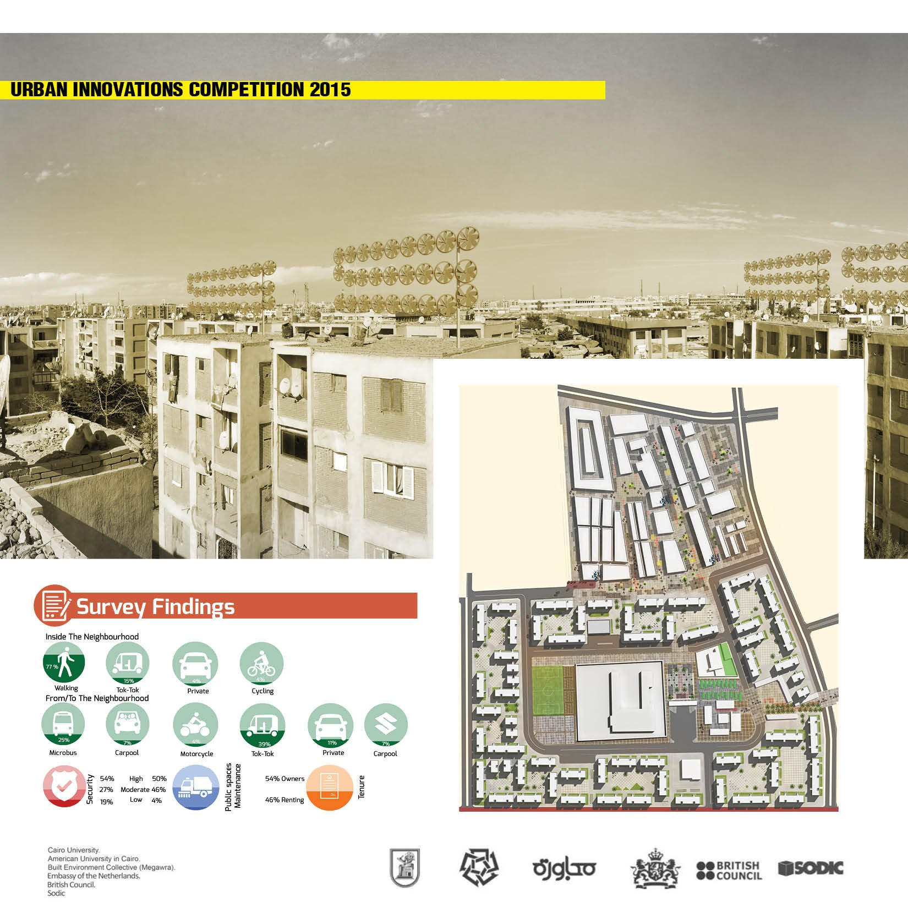
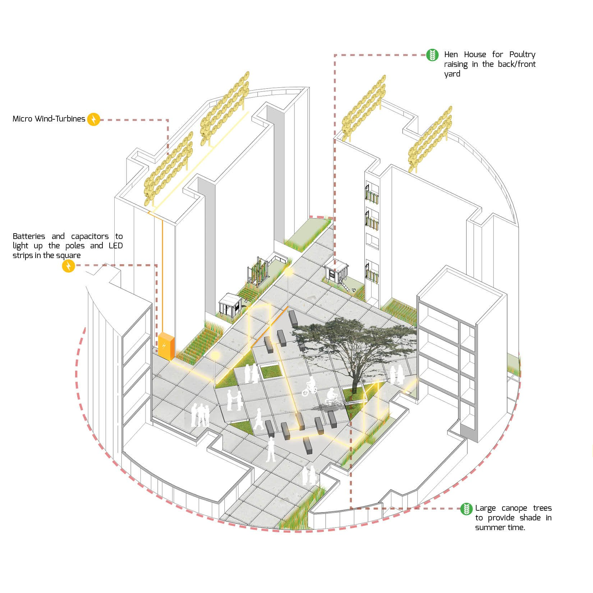

/ COMPETITION
Urban Innovations
An Urban Innovations Competition 2015 entry — a resident-driven retrofit of an informal Cairo neighbourhood, layering urban agriculture, renewable energy and sustainable mobility onto the spaces people already share.

/ CONCEPT
A multi-layered solution that starts with the residents.
The proposal treats an informal Cairo neighbourhood — “Megawra 9” — as a living testbed for three overlapping systems: urban agriculture, renewable energy and sustainable mobility. Rather than imposing a finished masterplan, each intervention is drawn from the residents’ own concerns, needs and daily activities, and from the gap between how spaces were built to be used and how they are actually lived in.
“Elhussein” market sits just outside the neighbourhood’s boundary, but as its most vibrant space it becomes the catalyst — the place to demonstrate the ideas first, before they spread to other neighbourhoods across the city.
The work was developed with Cairo University, the American University in Cairo, the Built Environment Collective (Megawra), the Embassy of the Netherlands, the British Council and SODIC.
The method ran in three moves: a questionnaire interviewing representatives across the community’s different strata; observation of how residents actually use and repurpose their spaces against their original intent; and intensive field and online research into case studies and experimental technologies — each idea then tested for feasibility. Movement inside the area is overwhelmingly on foot, while trips to and from it lean on the tok-tok and the microbus.
Urban agriculture
Semi-private front and back yards are turned over to crops — grown conventionally or with vertical, water-thrifty methods like hydroponic Zip-Grow towers to lift yield per square metre. A new farming market by the mosque sells the produce and the supplies to grow it, while unused mosque space hosts farming lessons. Hen houses in the yards add poultry to the mix.
Renewable energy
Rooftops carry banks of micro wind-turbines. Their output feeds batteries and capacitors that, in turn, light the poles and LED strips threading through the public square — energy harvested and spent within the same few blocks.
Sustainable mobility
With walking already the dominant mode inside the area, the square is reshaped as a pedestrian catalyst — shaded, planted and lit — that keeps movement local and comfortable while linking to the shared modes residents rely on for longer trips.
